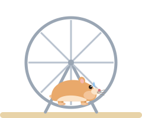
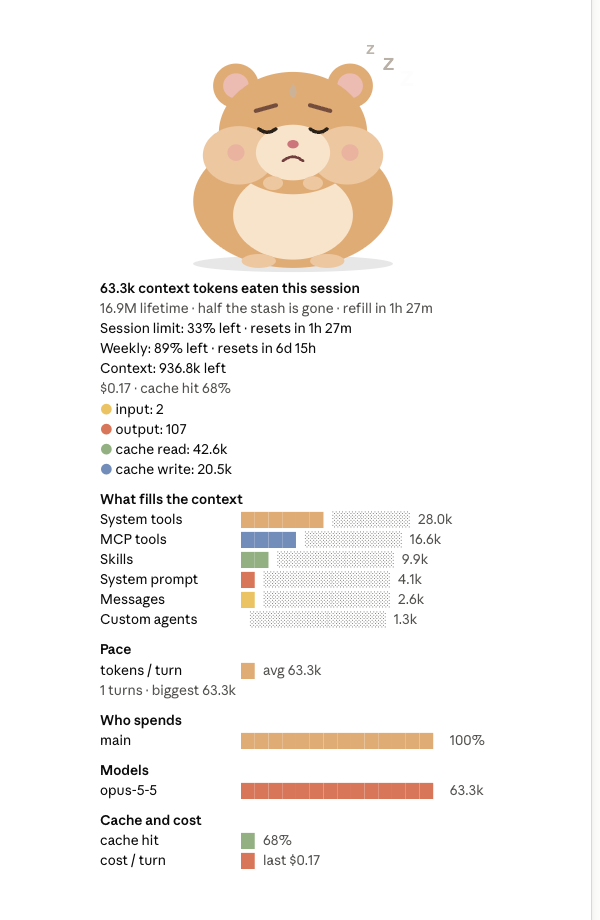

Everything about your usage, above the prompt
An animated hamster eats every token Claude eats. No API key, no log scraping, nothing estimated: the numbers come from Claude Code's own usage data at the end of every turn.
- Token usage
- Input, output, cache read and cache write tokens for the session, plus a lifetime total.
- 5-hour and weekly limits
- Both plan limits as percent left, with a
refill in …countdown to the reset. - Run-out forecast
- Your pace per turn, and when the session limit will run out at that pace.
- Cost per turn
- Cost per turn and for the session, and the cache hit rate.
- Who spends the tokens
- Usage by the main loop and each subagent type, by tool and by model.
- Statusline
- Totals and both limits under the prompt, such as
session 62%andweek 95%.
The mood follows your rate limits
The hamster follows the emptiest limit, the 5-hour session or the week. It sweats at half, runs in its wheel at a quarter, and sleeps in its house until the limit resets.

Eating 
Napping 
50% left 
25% left 
0% left

A usage dashboard inside Claude Code
Type /hamster or press Details to open the pane.
- Context. What fills the context window, as
/contextlists it. - Pace. Tokens per turn and when the session limit runs out.
- Who spends. The main loop against each subagent, tools and models.
- Cache and cost. Cache hit rate and cost per turn.
How do I check my Claude Code usage?
Install the mod and keep coding. It answers the usual questions without leaving the session.
| Question | Where you see it |
|---|---|
| How many tokens has this session used? | The hamster's cheeks, the pane's counts, the statusline |
| How close am I to the Claude 5-hour limit? | session 62% in the statusline and the hamster's mood |
| How much of the weekly limit is left? | week 95% in the statusline and the pane's limit bars |
| When does my Claude limit reset? | refill in … on the cage and in the pane |
| When will I hit the limit at this pace? | The pane's pace forecast |
| What does a turn cost? Is the cache working? | The pane's cost per turn and cache hit rate |
| Which subagent, tool or model burns the most tokens? | The pane's breakdown |
Token Hamster vs other Claude Code usage tools
| Token Hamster | ccusage | Usage monitor apps | Statusline scripts | |
|---|---|---|---|---|
| Runs inside Claude Code | Yes, as a mod | CLI you run | Separate app | Yes |
| Live 5-hour and weekly limits | Yes | No | Yes | Some |
| Reset countdown and forecast | Yes | No | Yes | Some |
| Cost per turn, cache hit rate | Yes | From logs | Yes | Some |
| Breakdown by subagent, tool, model | Yes | By model | No | No |
| Animated mascot | Yes | No | No | No |
Use ccusage for reports over past days and months, and Token Hamster to watch the current session as it happens. They work fine together.
Claude Code tokens and limits, explained
What are tokens in Claude Code?
Tokens are the pieces of text the model reads and writes. Every Claude Code turn spends four kinds: input (your prompt and the context sent with it), output (what Claude writes), cache read (context reused from the prompt cache) and cache write (context saved to the cache for later turns). Token Hamster counts all four for the session and keeps a lifetime total.
How do I check my Claude Code token usage?
Claude Code's built-in commands show a snapshot when you ask for it. Token Hamster keeps your token usage on screen the whole time, in the terminal, in VS Code, in the desktop app's Code tab and on mobile. The cage above the prompt shows tokens eaten and limits left, the statusline shows the totals, and /hamster opens a full token usage dashboard.
What is the Claude 5-hour limit?
On Claude plans with usage limits, such as Pro and Max, Claude Code usage counts against a 5-hour session limit and a weekly limit. Claude Code reports each limit as a percentage used, not as a number of tokens, so Token Hamster shows how much of each limit is left, for example session 62% and week 95%, and the hamster's mood follows whichever is emptier.
How many tokens do I get on Claude Pro or Max?
Limits depend on your plan and are set by Anthropic. Claude Code shows them as a share of the limit rather than a fixed token count. The practical question is how fast you are using it, so Token Hamster tracks tokens per turn and turns your pace into a forecast of when the session limit runs out.
When does my Claude usage limit reset?
Each limit resets at the end of its own window: the 5-hour session limit and the weekly limit have separate reset times. Token Hamster reads the reset time Claude Code reports and counts down to it with refill in …. When a limit reaches 0%, the hamster sleeps in its house until the limit resets.
What happens when I hit the Claude Code usage limit?
When a limit is used up, you wait for it to reset. Token Hamster warns you on the way there: the hamster gets worried at half the limit and runs in its wheel with a quarter left, so the limit does not surprise you mid-task.
How much does a Claude Code turn cost?
Token Hamster turns tokens into dollars using the cost Claude Code reports for the session, and shows the cost per turn, the session total and the credits used in the statusline. Nothing is estimated from price tables.
What is the cache hit rate?
Claude Code reuses context through prompt caching, and cache read tokens cost less than fresh input. The cache hit rate is the share of input served from the cache. Token Hamster shows it per turn, so you can see when the cache stops working, for example after a long pause.
Is my Claude Code context window full?
The pane shows how much of the context window is left and what fills it, by category, as /context lists it: system prompt, tools, skills, MCP tools and messages.
How do I reduce Claude Code token usage?
Start by seeing where the tokens go. The pane breaks usage down by the main loop and each subagent type, by tool and by model, shows what fills the context, and tracks cost and cache hit rate per turn. That makes it easy to spot a subagent, tool or MCP server that burns tokens, and to compact or start a fresh session before the context gets heavy.
Install in two commands
Run these inside Claude Code:
/plugin marketplace add valeryia-piatrova/token-hamster/plugin install token-hamster@token-hamsterRequires Claude Code 2.1.289 or later. The limit bars and moods appear on plans with usage limits (Pro and Max). Token Hamster reads only the session's own usage data, keeps one number on your machine and makes no network requests. Read the privacy policy.